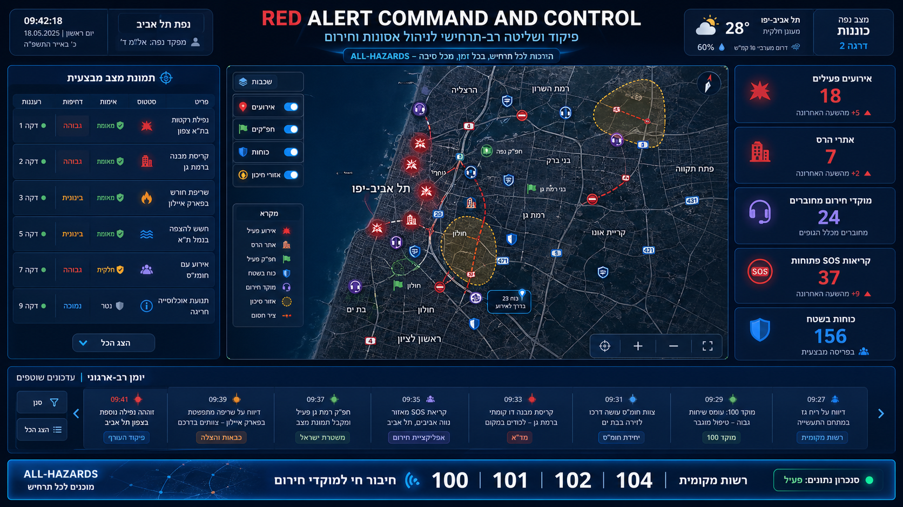
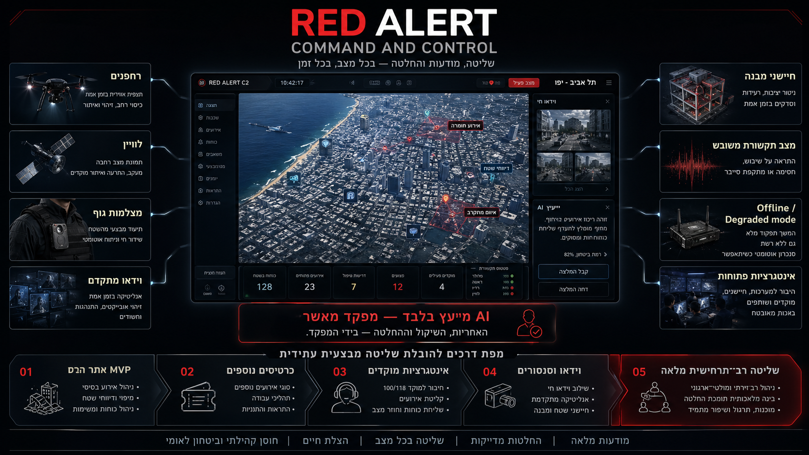
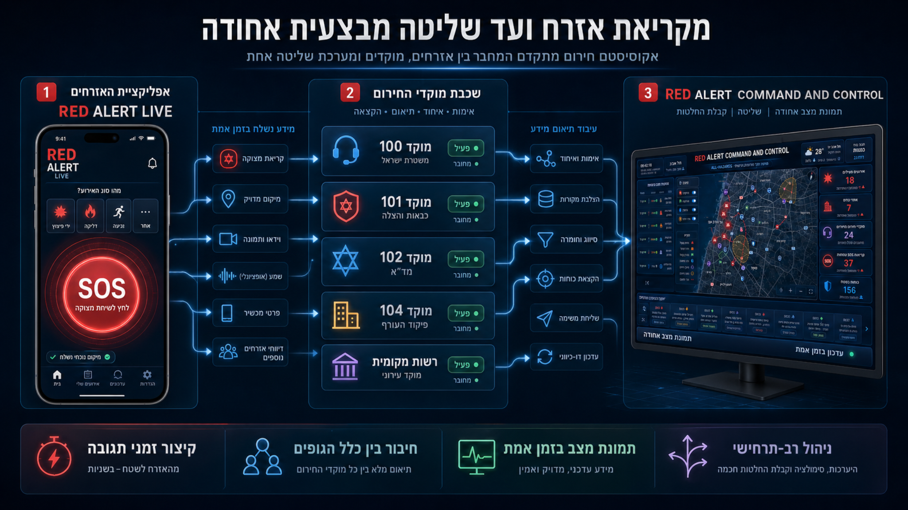
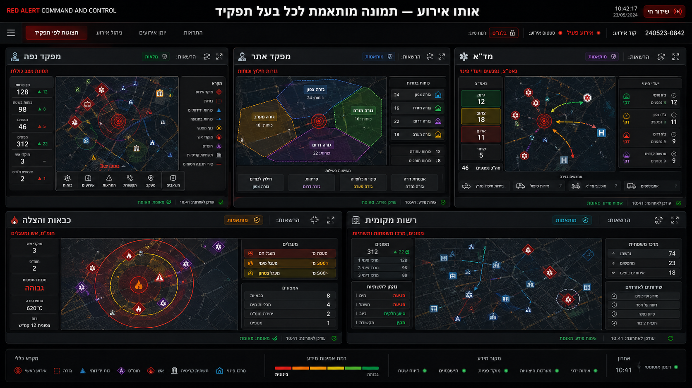
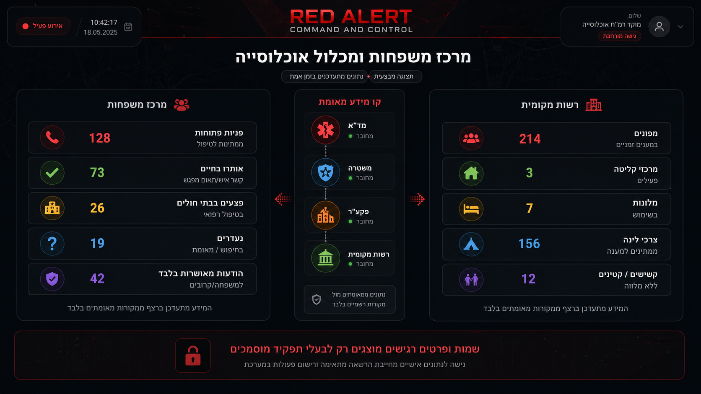
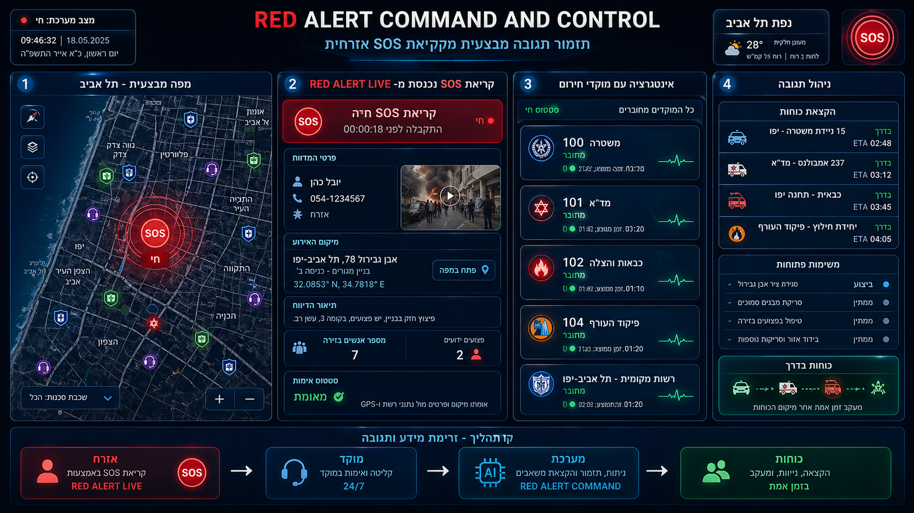

מערכת שליטה וניהול חירום רב־ארגונית בזמן אמת
הופכת מידע מבוזר ממוקדי חירום, כוחות שטח, רשויות ואזרחים — לתמונת מצב מבצעית אחת, משותפת, אמינה ומעודכנת. מהמידע — להחלטה — למשימה — לביצוע בשטח.

RED ALERT C&C לא נבנתה רק עבור תרחיש של קריסת מבנה. החזון: מערכת אחת שמנהלת מגוון רחב של אירועי חירום, מחברת בין פיקוד העורף, משטרה, מד״א, כבאות, רשות מקומית, מוקדים ואזרחים — לשפה מבצעית אחת.

בכל אירוע חירום המידע מגיע במקביל ממספר רב של ערוצים. התוצאה — הפיקוד לא באמת שולט בתמונה.
המערכת קולטת ממקורות שונים, מאחדת, מסווגת, משייכת — ומציגה לכל דרג לפי הצורך המבצעי. לא רק "תמונה נכונה", אלא תמיכה בשרשרת פיקוד מלאה.
האזרח כבר לא מחוץ למערכת. הוא הופך לחלק משרשרת המידע — בצורה מבוקרת, מאומתת ומתואמת עם מוקדי החירום — ועד פתיחת משימה ומעקב.

כלל הגופים עובדים על אותה תמונת אמת — כל אחד מקבל ממשק לפי האחריות.

המערכת מנהלת לא רק את הזירה — אלא גם את האוכלוסייה והתשתיות, עד תמונת חזרה לשגרה.

לכל קריאת מצוקה — מסלול טיפול ברור עם בעל אחריות. הקריאה לא נעלמת ולא נשארת תלויה באוויר.

RED ALERT C&C נבנתה לרגע הזה בדיוק. כשהמסכים מתמלאים, הקווים נחסמים והאזרחים זועקים —
המפקד מקבל תמונה אחת. אמת אחת. שליטה אחת.
לא עוד דיווחים שנעלמים. לא עוד החלטות באפלה. לא עוד ערפל אחריות.